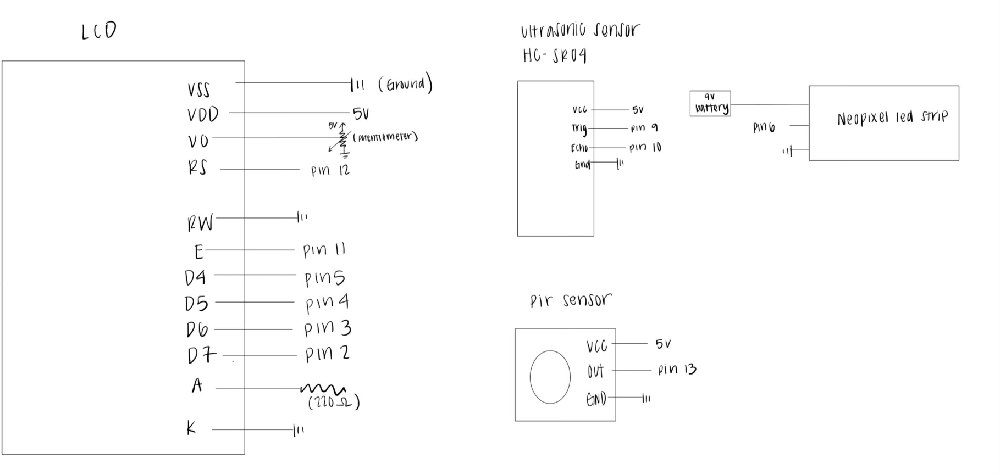
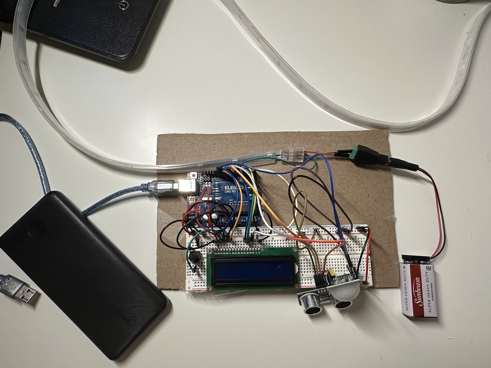

Final Assignment: StairAware!
Technical Implementation:
The main components of my project are an Arduino, a PIR motion sensor (HC-SR501), an ultrasonic sensor (HC-SR04),
a 16x2 LCD screen, and a NeoPixel LED strip. These components work together to create a motion-activated lighting
system that improves safety on staircases in low-light environments.
The Arduino serves as the controller that processes my code and the input from the PIR sensor, which detects movement and activates the system.
The ultrasonic sensor measures the user’s distance from a starting point and determines how many LEDs should light up.
The NeoPixel LED strip is powered separately using a 9V battery and is controlled by the Arduino using PWM to gradually
light up LEDs based on the user’s proximity. The Arduino is powered by an Anker Power Bank for a wireless experience.
The LCD screen provides real-time feedback, initially displaying the message “Watch Your Step” when motion is detected. As the user moves,
the screen updates to “Motion Detected” along with the measured distance. When no motion is detected, the LCD displays “Motion Not Detected,”
and a countdown begins before the LEDs turn off. The LEDs blink twice as a final signal before shutting down completely. By combining motion
detection and distance tracking with the LED strip, the StairAware system eliminates the need for manual light switches, ensuring a hands-free
navigation experience when it gets dark.
- Inputs:
- PIR Motion Sensor
- Ultrasonic Sensor
- Outputs:
- NeoPixel LED Strip (turns on/off)
- 16x2 LCD Screen (messages)
Materials
- PIR Motion Sensor (HC-SR501) - Detects movement (human) to activate the system
- Ultrasonic Sensor (HC-SR04) - Measures the user’s distance to control LED activation
- NeoPixel LED Strip (5V, 43 LEDs) - Provides lighting (started with 54 LEDs)
- LCD Screen (16x2)
- Arduino Board
- 9V Battery
- Anker Power Bank
- Wires
- Resistor (220 ohm’s for LCD screen)
- 10K ohm’s Potentiometer
- Solder/Alligator Clips/3 Pin LED Strip Connector
- Cardboard
Development Process & Challenges
Building StairAware was far more complex than I initially anticipated. While the concept seemed straightforward, the integration of multiple
components meant that if one failed, it affected the entire system. It took me several days to get everything functioning reliably.
Challenges with the LED Strip
The most time-consuming issue was connecting the NeoPixel LED strip to the Arduino and 9V power supply. Initially, I tried using alligator clips,
but the connection was weak and required precise positioning to work. To create a more stable connection, I decided to solder the wires directly
to the LED strip. However, soldering proved to be a major challenge. The connections kept breaking, and I had to redo the process at least five
times. I visited the Electrical Engineering building and the mill multiple times to attempt a more secure soldering job. When soldering failed,
I experimented with copper tape, but neither provided a strong enough connection. Eventually, I resorted to one final soldering attempt,
which held temporarily but became unreliable on the day of the demo when the soldered connection separated again. As a last resort, I ordered a
3-pin LED strip connector, which provided a strong and reliable connection, significantly improving the stability of my wiring and overall project.
Unfortunately, it arrived too late—on the day of the demo, preventing me from showcasing the system in its fully functional state. Although the color
isn't as stable for example: staying as purple, but it still functions as intended.
Sensor and LCD Screen Issues
The PIR motion sensor, ultrasonic sensor, and LCD screen had minor issues but were easier to troubleshoot. The main difficulty was determining
whether the issue came from incorrect wiring, faulty logic in the code, or the unstable LED strip connection.
One unexpected problem was the LED colors not displaying correctly. After hours of debugging, I realized the issue was caused by the 9V battery
draining too quickly, affecting power delivery to the LED strip. Once the battery weakened, the LEDs either dimmed or displayed incorrect colors.
Final Outcome
Despite these challenges, the system worked as intended, activating upon motion detection, tracking user distance, and lighting up LEDs accordingly.
Once the 3-pin LED strip connector was installed, the wiring became much more reliable, ensuring consistent performance. However, this improvement
came after the demo day which was really unfortunate. My mom really enjoyed my LED strips when it worked properly! This is something I’d like to
implement to all of our stairs.
Schematic & Circuit


For my schematic, I drew each component individually to clearly represent the connections and functions of the system. The Arduino serves as the main controller for all the components(didn’t draw this part,
but it’s connected to the anger power bank as it’s power supply)including the PIR motion sensor, ultrasonic sensor, NeoPixel LED strip, and LCD screen. I used a clear layout, where each component is shown with
its respective pins and connections to other parts of the circuit.
The PIR motion sensor is connected to a digital input pin13 on the Arduino.
This sensor detects human movement and sends a HIGH signal when motion is detected. The ultrasonic sensor, responsible for measuring the distance to the user, is connected to the Arduino with its trigger
pin connected to a digital output pin 9 and the echo pin to a digital input pin 10. The distance is measured by sending out an ultrasonic pulse and measuring the time it takes to return after bouncing off an object (the user).
The NeoPixel LED strip is connected to pin 6 on the Arduino, allowing for control over the LED strip. The strip consists of multiple (43) LEDs, and the schematic reflects how each LED can be
individually controlled using the Arduino’s data output. For power, the LED strip is powered through a separate 9V battery, which is connected in the schematic to the NeoPixel's power input.
For the LCD screen, I used the LiquidCrystal library and connected it to the Arduino's digital pins, specifying RS, E, and D4-D7 for data transfer. The LCD is powered through the same power
source as the Arduino, and the schematic shows the 220-ohm resistor needed to protect the LCD backlight. To ensure smooth functioning, I also included a 10k potentiometer to adjust the brightness of the LCD.
I included all necessary connections for the power supply, with a 9V battery that powers both the NeoPixel strip, while the Arduino also receives a power from the anker power bank. On the breadboard I also
made the power and ground connection across the board to ensure that all components share a common circuit.
Code
#include Adafruit_NeoPixel.h // NeoPixel library for controlling LED strip
#include LiquidCrystal.h // LiquidCrystal library for controlling LCD
// Pin Assignments
#define pir_sensor_pin 13 // Pin for the PIR motion sensor
#define trig_pin 9 // Pin for the ultrasonic sensor trigger
#define echo_pin 10 // Pin for the ultrasonic sensor echo
#define led_strip_pin 6 // Pin for the NeoPixel LED strip
#define num_led 43 // Number of LEDs in the strip
LiquidCrystal lcd(12, 11, 5, 4, 3, 2); // Initialize the LCD with corresponding pins
Adafruit_NeoPixel strip = Adafruit_NeoPixel(num_led, led_strip_pin, NEO_GRB + NEO_KHZ800); // Initialize the NeoPixel strip
int pirState = LOW; // current state of the PIR sensor (LOW means no motion)
float lastDistance = -1; // Stores the last measured distance (initialized to -1)
int lastLedCount = 0; // Stores the last LED count to track changes
bool systemActivated = false; // Tracks if the system has been activated by motion
void setup() {
pinMode(pir_sensor_pin INPUT); // Set PIR sensor pin as input
pinMode(trig_pin, OUTPUT); // Set trigger pin for ultrasonic sensor as output
pinMode(echo_pin, INPUT); // Set echo pin for ultrasonic sensor as input
Serial.begin(9600); // Serial communication for debugging
lcd.begin(16, 2); // LCD to 16x2 characters
lcd.clear(); // Clears the screen
strip.begin(); // NeoPixel strip
strip.clear(); // Makes sure LEDs are off
strip.show(); // Updates
}
void loop() {
int motionDetected = digitalRead(pir_sensor_pin); // Reads PIR sensor for motion
if (motionDetected == HIGH) { // If motion is detected
if (!systemActivated) { // If not activated yet
systemActivated = true; // Activate the system
Serial.println("Motion Detected"); // Output to serial monitor
lcd.clear(); // Clear the LCD screen
lcd.print("Watch Your Step!"); // Displays the message on LCD
delay(3000); // Wait 3 seconds
lcd.clear(); // Clears the LCD screen
}
// Measuring distance using ultrasonic sensor
long duration;
float distance;
digitalWrite(trig_pin, LOW); // Low to start measurement
delayMicroseconds(2); // Small delay
digitalWrite(trig_pin, HIGH); // Send HIGH to trigger the sensor
delayMicroseconds(10); // Maintain HIGH
digitalWrite(trig_pin, LOW); // Ends the HIGH pulse
duration = pulseIn(echo_pin, HIGH); // Measure the duration of the echo
distance = (duration * 0.0343) / 2; // Calculate distance based on duration (speed of sound)
lcd.clear(); // Clear the LCD screen
lcd.print("Motion Detected"); // Display motion detected message
lcd.setCursor(0, 1); // Move to second line of LCD
lcd.print("Dist: "); // Display distance
lcd.print(distance); // Display measured distance
lcd.print(" cm"); // Display unit in cm
lastDistance = distance; // Store the current distance
// LED to turn on based on distance
int ledCount = map(distance, 5, 140, 2, num_led); // Map distance to LED count
ledCount = constrain(ledCount, 0, num_led); // Ensure ledCount stays within bounds
// Update the LED strip if the LED count has changed
if (ledCount != lastLedCount) {
for (int i = 0; i < num_led; i++) { // Loop through all LEDs
if (i < ledCount) {
strip.setPixelColor(i, strip.Color(128, 0, 255)); // Set LED to purple
} else {
strip.setPixelColor(i, 0); // Turn off LED
}
}
strip.show(); // Update the LED strip
lastLedCount = ledCount; // Store the current LED count
}
} else { // If no motion is detected
if (systemActivated) {
Serial.println("Motion Not Detected");
// Countdown before blinking and turning off
for (int i = 3; i > 0; i--) { // Countdown from 3 to 1
lcd.clear(); // Clear the LCD screen
lcd.print("Shutting Down:"); // Display message
lcd.setCursor(0, 1);
lcd.print("Countdown: "); // Display "Countdown: "
lcd.print(i); // Display countdown number
delay(1000); // Wait for 1 second
}
lcd.clear(); // Clear the LCD screen
lcd.print("Motion Not Found"); // Display "Motion Not Found"
// Blink LEDs 2 times in purple
for (int i = 0; i < 2; i++) { // Repeat blinking 2 times
for (int j = 0; j < num_led; j++) { // Loop through all LEDs
strip.setPixelColor(j, strip.Color(128, 0, 255)); // Set all LEDs to purple
}
strip.show(); // Update the LED strip to show the changes
delay(500); // Wait for 500ms
strip.clear(); // Turn off all LEDs
strip.show(); // Update the LED strip to show the changes
delay(500); // Wait for 500ms
}
// Turn everything off
strip.clear(); // Turns off LEDs
strip.show(); // Update the LED strip
systemActivated = false; // Reset activation state
pirState = LOW; // Reset PIR sensor state
}
}
delay(200); // Small delay
}
Updated Demo Video: https://www.youtube.com/shorts/gePyY43TmBg